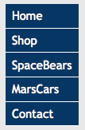

Accessibility &
Multi-Screen Design Menus
Disclaimer
This course is not a W3C course.
Views expressed are my own.
Dies ist kein W3C-Kurs.
Alle Ansichten sind meine Eigenen.
Overview
- Menus
- Markup
- Styling
-
Menu Examples
Menus are used to browse around websites (“navigation menus”) or initiate actions inside a web page (“application menus”).
Why is this important? 1
- Navigation menus reflect the underlying structure of a website’s content.
- Helps users to find what they are looking for.
- Screen reader and keyboard users should be aware which link is currently in focus. The menu link to the page the user is currently on should be indicated as well.
- Screen reader users expect web application menus to work like desktop menus.
- Users with fine motor difficulties and touch screen users need large targets to click or tap on.
Why is this important? 2
- Users with shaky hands need fly-out menus to not disappear immediately after the mouse has left the submenu.
- People with attention limitations, short term memory limitations, or limitations in executive processes benefit by being able to discover where the focus is located.
Markup
<nav aria-label="Main Menu">
<ul>
<li><a href="…">Home</a></li>
<li><a href="…">Shop</a></li>
<li><a href="…">SpaceBears</a></li>
<li><a href="…">MarsCars</a></li>
<li><a href="…">Contact</a></li>
</ul>
</nav>
Styling → Vertical menu

Styling → Horizontal menu
Brave new world:
Menus 2.0
The Problems
- Lower Discoverability
- Less Efficient
- Clash with Platform Navigation Patterns
- Not Glanceable
Take Aways
- Make your navigation obvious
- Indicate where users are
- Be consistent
- Enable glancing at information
- Always use words with icons